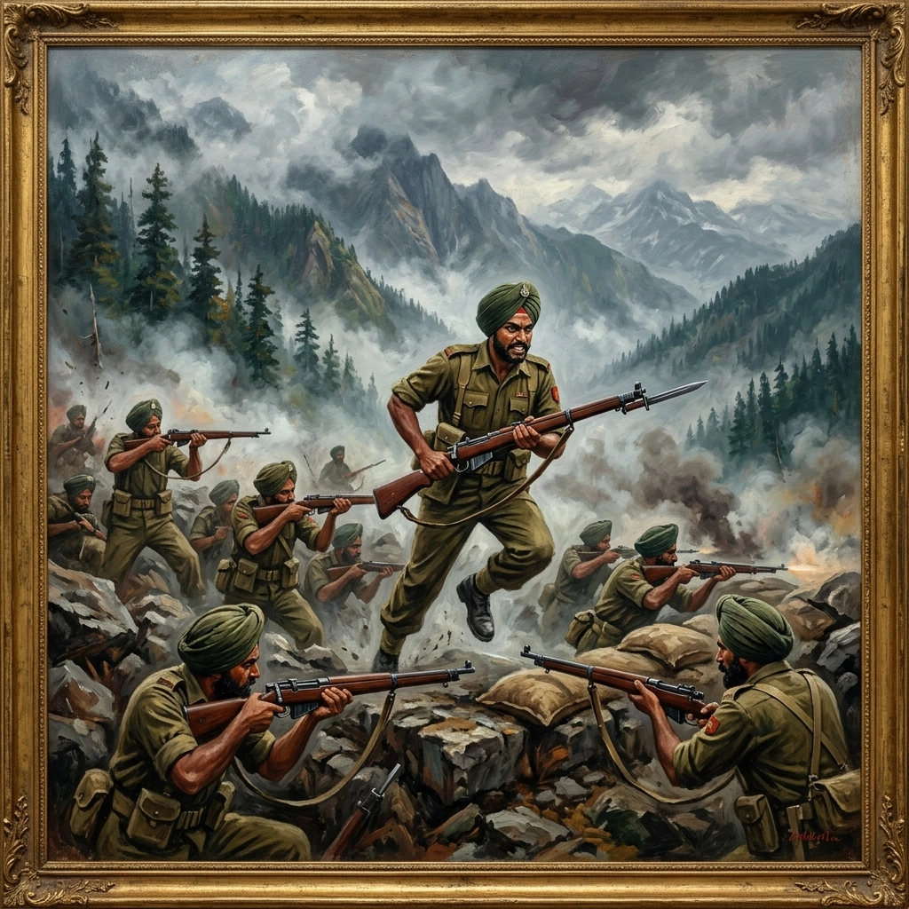

वालोंग की लड़ाई


शीर्षक: The Battle of Walong
श्रेणी: The Battle of Walong
कलाकार: सिख रेजिमेंटal Centre
वर्ष: ऐतिहासिक
श्रेणी: The Battle of Walong
कलाकार: सिख रेजिमेंटal Centre
वर्ष: ऐतिहासिक
वालोंग की लड़ाई
लोहित फ्रंटियर में, लेफ्टिनेंट कर्नल ए.एल. बहल के नेतृत्व में 4 सिखों ने 16 सितंबर को वालोंग की ओर बढ़ना शुरू किया। 20-21 अक्टूबर को जब चीनी आक्रमण शुरू हुआ तब इसकी कंपनियां अभी भी सुरक्षा का निर्माण कर रही थीं और 5,000 से 8,000 फीट के बीच की स्थिति में आपूर्ति कर रही थीं। 24 अक्टूबर को, लैडर्स में ब्रावो कंपनी ने लगभग 600 चीनियों के हमले को विफल कर दिया, जिसमें 200 से अधिक लोग मारे गए या घायल हो गए। 26-27 अक्टूबर को नए सिरे से लड़ाई के दौरान, सिपाही केवल सिंह ने गंभीर घावों के बावजूद दुश्मन पर हमला किया और उन्हें मरणोपरांत महावीर चक्र से सम्मानित किया गया। बटालियन लगातार दबाव और गंभीर साजो-सामान की कमी के बीच पच्चीस दिनों तक अपनी अग्रिम स्थिति पर कायम रही। 15-16 नवंबर की लड़ाई में मेजर पी.एम. संवत्सर मारा गया; लेफ्टिनेंट योग राज पलटा और लांस हवलदार किरपा राम को नेतृत्व और गोला-बारूद की पुनः आपूर्ति के लिए मरणोपरांत वीर चक्र प्राप्त हुआ। वालोंग अंततः गिर गया, लेकिन 4 सिखों को भारी नुकसान हुआ और आदेश मिलने पर ही वे पीछे हटे। युद्धविराम के बाद 16 और 17 सिख नेफा पहुंच गए, जबकि 18 सिखों ने सिक्किम में चुंबी घाटी के सामने ऊंचे दर्रों पर सफलतापूर्वक कब्जा कर लिया।
लोहित फ्रंटियर में, लेफ्टिनेंट कर्नल ए.एल. बहल के नेतृत्व में 4 सिखों ने 16 सितंबर को वालोंग की ओर बढ़ना शुरू किया। 20-21 अक्टूबर को जब चीनी आक्रमण शुरू हुआ तब इसकी कंपनियां अभी भी सुरक्षा का निर्माण कर रही थीं और 5,000 से 8,000 फीट के बीच की स्थिति में आपूर्ति कर रही थीं। 24 अक्टूबर को, लैडर्स में ब्रावो कंपनी ने लगभग 600 चीनियों के हमले को विफल कर दिया, जिसमें 200 से अधिक लोग मारे गए या घायल हो गए। 26-27 अक्टूबर को नए सिरे से लड़ाई के दौरान, सिपाही केवल सिंह ने गंभीर घावों के बावजूद दुश्मन पर हमला किया और उन्हें मरणोपरांत महावीर चक्र से सम्मानित किया गया। बटालियन लगातार दबाव और गंभीर साजो-सामान की कमी के बीच पच्चीस दिनों तक अपनी अग्रिम स्थिति पर कायम रही। 15-16 नवंबर की लड़ाई में मेजर पी.एम. संवत्सर मारा गया; लेफ्टिनेंट योग राज पलटा और लांस हवलदार किरपा राम को नेतृत्व और गोला-बारूद की पुनः आपूर्ति के लिए मरणोपरांत वीर चक्र प्राप्त हुआ। वालोंग अंततः गिर गया, लेकिन 4 सिखों को भारी नुकसान हुआ और आदेश मिलने पर ही वे पीछे हटे। युद्धविराम के बाद 16 और 17 सिख नेफा पहुंच गए, जबकि 18 सिखों ने सिक्किम में चुंबी घाटी के सामने ऊंचे दर्रों पर सफलतापूर्वक कब्जा कर लिया।
🇬🇧 English
🇮🇳 हिन्दी
ੴ ਪੰਜਾਬੀ
मोबाइल पर खोलें
अपने फोन पर अंग्रेजी, हिंदी या पंजाबी में देखने के लिए इस QR कोड को स्कैन करें।